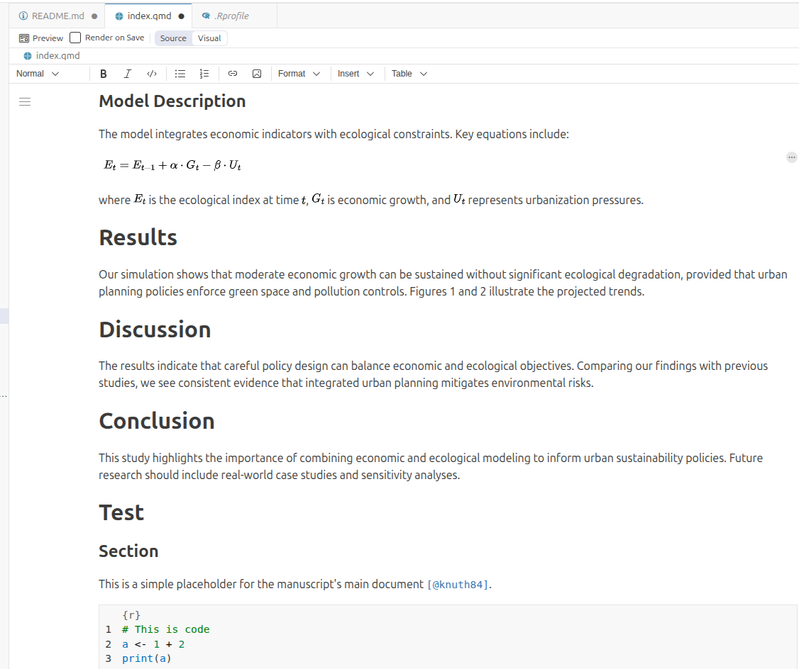
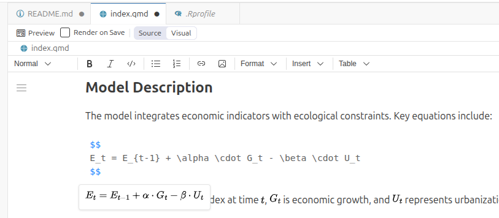
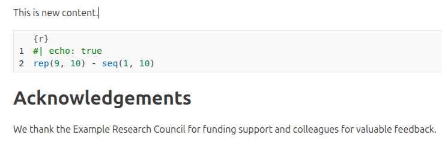

22 But how do I write in Quarto syntax?
22.1 Well, maybe you don’t need to
Remember, you have to experiment! You learn better by doing. In most cases, if the syntax is not appealing, you don’t even need to know it! The Positron team has also thought about this. All Quarto files give you the option of using Visual mode:

Again, you see visual mode enables a bunch of new buttons. Click’em all!
At some point maybe you’ll become familiar with most of the options and their translation to the actual raw syntax, and then you might feel you write faster directly in Source mode. Or not. You decide.
Most “Quarto syntax” is nothing new. It’s based on something called Markdown. Anyway, if you’re interested in knowing more, go read something like Quarto’s Markdown basics.
22.2 What are these weird symbols for the math formulas?
I told you to click all things, so I hope this is not new for you. When you try to unravel that math formula I included as an example, you see this:

What’s going on there?
Remember we talked about this format called LaTeX that you didn’t need to know about? If your paper doesn’t require writing math formulas, you’re safe. Otherwise…
Welcome to LaTeX math formulas. Yes, we’re in Quarto, but we still use LaTeX syntax for math formulas. So you’ll need to learn how to do that. No, I won’t teach a LaTeX course here. Ask your favorite AI or something.
22.3 Quarto runs my code?!
Yes! That’s one of the best features. You can include code blocks in Quarto files, and they will be run and their output included in the final document. You can also choose if you want to include only code, only output, or both.

Remember when we had some errors about missing R packages the first time we tried to preview? Well, in theory Quarto works without R. But I included some R code chunks in our document, so it needed those package installations to be able to run the code.
In the above example, this {r} thing indicates that this is R code. By default, Quarto runs code but only shows its output. The special comment #| echo: true tells Quarto that we also want to show the actual code in the final document, not only its output.
If you want to learn more about running code inside Quarto, you can probably start here.
22.4 More, more, more
Yes, there’s more for you. But not here. Go and read Quarto’s docs, they have a bunch of things. Particularly, you might want to check:
- Positron Basics: how to boost your experience with Quarto inside Positron.
- Visual editor: learn about more things you can do visually without having to learn too much syntax.